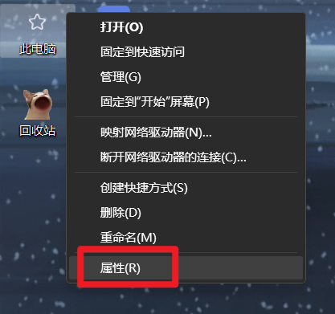
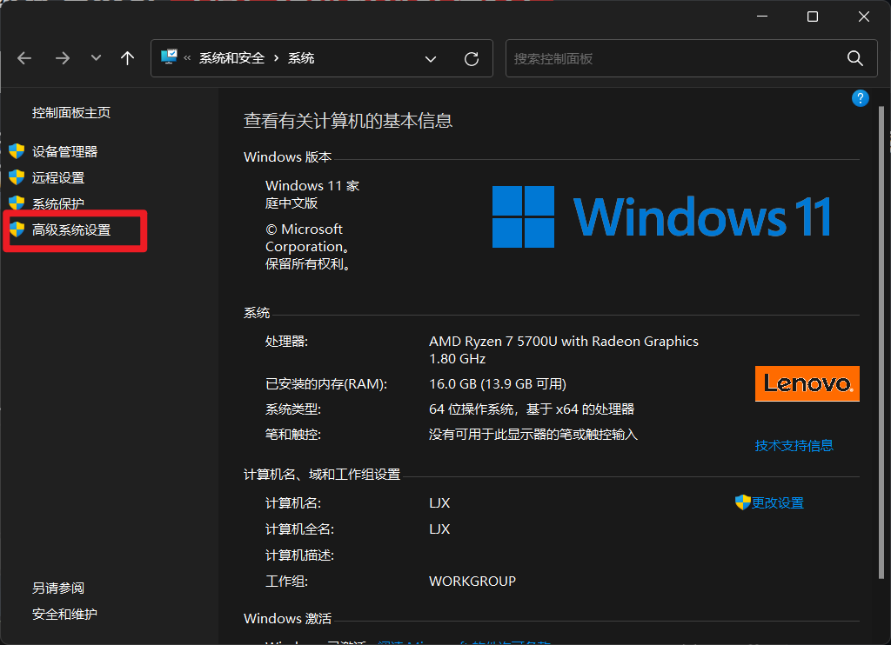
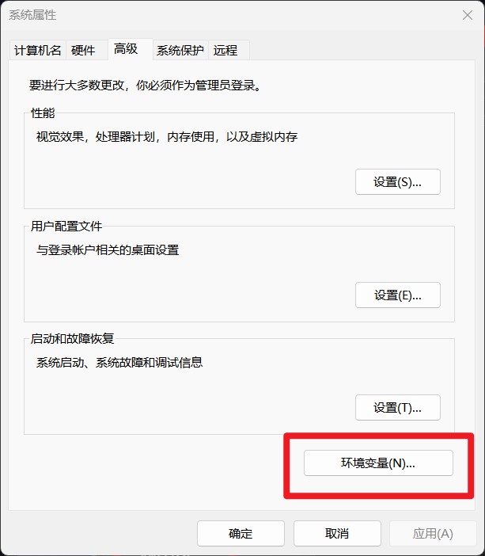
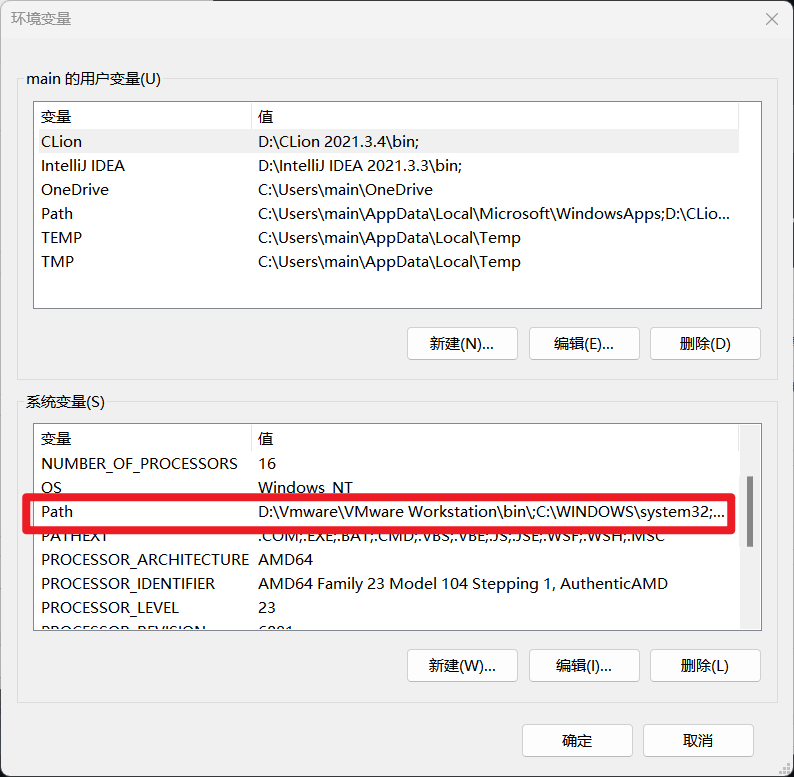
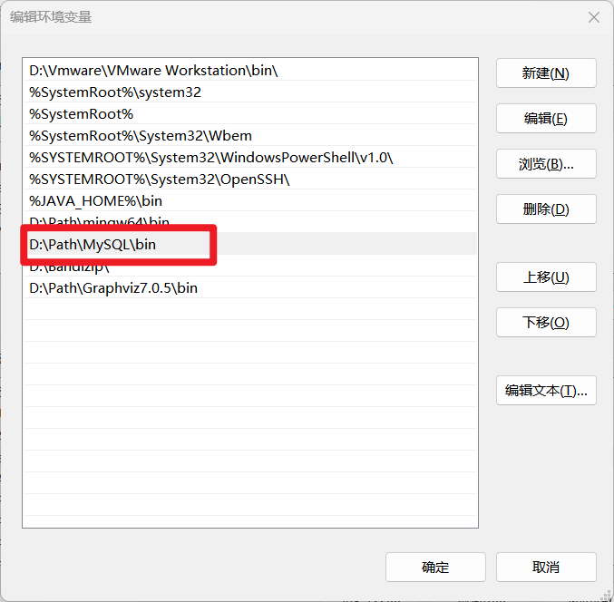

MySQL8.0及以上版本配置教程 （请严格按照过程进行）
第一步：
将MySQL文件解压到任意位置，例如 D:/Path/MySQL，
并将MySQL文件夹下的bin目录加到系统的环境变量中，具体操作如图所示（以Windows11系统为例）：





第二步：
在MySQL文件夹下新建 my.ini 文件，输入内容：
[mysqld]
# 设置端口
port=3306
# 设置为自己MySQL的安装目录
basedir=D:\\Path\MySQL\\
# 设置为MySQL的数据目录
datadir=D:\\Path\MySQL\\data\\
端口号可根据个人喜好设置，尽量使用3306，避免占用其他程序的端口，目录是自己电脑中MySQL目录的位置，其他的和上方保持一致
第三步：
在Windows搜索框搜索“命令提示符”，以管理员身份运行；或者右键Windows徽标，点击Windows终端（管理员）
使用 mysqld -install 命令安装MySQL服务
标虚线处是输入的内容， 此窗口是“命令提示符”窗口
Microsoft Windows [版本 10.0.22621.1194]
(c) Microsoft Corporation。保留所有权利。
C:\Windows\System32>mysqld -install
Service successfully installed.
C:\Windows\System32>
如图所示即为安装成功，若非显示此内容，请跳转：删除MySQL服务及初始化MySQL安装目录
第四步：
使用mysqld --initialize --user=root初始化data目录
标虚线处是输入的内容， 此窗口是“命令提示符”窗口
Microsoft Windows [版本 10.0.22621.1194]
(c) Microsoft Corporation。保留所有权利。
C:\Windows\System32>mysqld --initialize --user=root
C:\Windows\System32>
如图所示后，查看MySQL目录，会多出一个data文件夹，即为初始化成功，
若非显示此内容，请跳转：
删除MySQL服务及初始化MySQL安装目录
第五步：
MySQL8.0及以上版本无法通过配置文件跳过安全检查，所以此时需要使用命令跳过安全检查，使用
mysqld --skip-grant-tables --shared-memory命令跳过安全检查，
注意：此时还要使用管理员身份运行命令提示符
标虚线处是输入的内容， 此窗口是“命令提示符”窗口
Microsoft Windows [版本 10.0.22621.1194]
(c) Microsoft Corporation。保留所有权利。
C:\Windows\System32>mysqld --skip-grant-tables --shared-memory
|
此时，命令提示符会卡在这里不动，如果是这样就证明操作正确，如果和上面的窗口有任何差别就发生错误了，请跳转：
删除MySQL服务及初始化MySQL安装目录
卡在这里之后，此窗口不要关闭，用管理员身份再打开一个命令提示符，输入mysql -u root
标虚线处是输入的内容， 此窗口是“命令提示符”窗口
Microsoft Windows [版本 10.0.22621.1194]
(c) Microsoft Corporation。保留所有权利。
C:\Windows\System32>mysql -u root
Welcome to the MySQL monitor. Commands end with ; or \g.
Your MySQL connection id is 10
Server version: 8.0.31 MySQL Community Server — GPL
Copy right (c) 2000, 2022, Oracle and/or its affiliates.
Oracle is a registered trademark of Oracle Corporation and/or its
affiliates. Other names may be trademarks of their respective
owners.
Type 'help;' or '\h' for help. Type '\c' to clear the current input statement.
mysql>
如图所示，就已经进入了MySQL系统，使用如下MySQL指令重置密码：
UPDATE mysql.user SET authentication_string=null WHERE User="root";
FLUSH PRIVILEGES;
ALTER USER "root"@"localhost" IDENTIFIED WITH caching_sha2_password BY "password";
FLUSH PRIVILEGES;
exit;
标虚线处是输入的内容， 此窗口是“命令提示符”窗口
Microsoft Windows [版本 10.0.22621.1194]
(c) Microsoft Corporation。保留所有权利。
C:\Windows\System32>mysql -u root
Welcome to the MySQL monitor. Commands end with ; or \g.
Your MySQL connection id is 10
Server version: 8.0.31 MySQL Community Server — GPL
Copy right (c) 2000, 2022, Oracle and/or its affiliates.
Oracle is a registered trademark of Oracle Corporation and/or its
affiliates. Other names may be trademarks of their respective
owners.
Type 'help;' or '\h' for help. Type '\c' to clear the current input statement.
mysql>UPDATE mysql.user SET authentication_string=null WHERE User="root";
Query OK, 1 row affected (0.01sec)
Rows matched: 1 Changed: 1 Warnings: 0
mysql>FLUSH PRIVILEGES;
Query OK, 0 rows affected (0.02sec)
mysql>ALTER USER "root"@"localhost" IDENTIFIED WITH caching_sha2_password BY "自己想设置的密码";
Query OK, 0 rows affected (0.01sec)
mysql>FLUSH PRIVILEGES;
Query OK, 0 rows affected (0.01sec)
mysql>exit
Bye
C:\Windows\System32>
第六步：
按照图示操作之后，密码就设置完成了，关闭所有命令提示符窗口，并重新以管理员身份运行一个全新的命令提示符窗口，
使用 net start mysql 启动MySQL服务。注意：此时是第一次启动MySQL服务。如果前面启动过，请跳转：删除MySQL服务及初始化MySQL安装目录
标虚线处是输入的内容， 此窗口是“命令提示符”窗口
Microsoft Windows [版本 10.0.22621.1194]
(c) Microsoft Corporation。保留所有权利。
C:\Windows\System32>net start mysql
MySQL 服务正在启动 .
MySQL 服务已经启动成功。
C:\Windows\System32>
启动MySQL服务之后，就可以登录MySQL系统了，无论是普通运行的命令提示符还是管理员身份运行的都行
标虚线处是输入的内容， 此窗口是“命令提示符”窗口
Microsoft Windows [版本 10.0.22621.1194]
(c) Microsoft Corporation。保留所有权利。
C:\Windows\System32>mysql -u root -p
Enter password: 输入设置的密码
Welcome to the MySQL monitor. Commands end with ; or \g.
Your MySQL connection id is 10
Server version: 8.0.31 MySQL Community Server — GPL
Copy right (c) 2000, 2022, Oracle and/or its affiliates.
Oracle is a registered trademark of Oracle Corporation and/or its
affiliates. Other names may be trademarks of their respective
owners.
Type 'help;' or '\h' for help. Type '\c' to clear the current input statement.
mysql>
如果到了这里和教程完全一样，恭喜你，MySQL系统已经可以正常使用了！可以退出了
过程中如果出现任何问题，请跳转：删除MySQL服务及初始化MySQL安装目录
初始化操作
如果你来到了这个步骤，说明你没有完全按照步骤设置，或者MySQL服务有残留，请按照以下步骤进行初始化
1. 首先以管理员身份运行命令提示符，使用net stop mysql停止MySQL服务
标虚线处是输入的内容， 此窗口是“命令提示符”窗口
Microsoft Windows [版本 10.0.22621.1194]
(c) Microsoft Corporation。保留所有权利。
C:\Windows\System32>net stop mysql
MySQL 服务正在停止 .
MySQL 服务已成功停止。
C:\Windows\System32>
不管窗口上是否这样显示，直接下一步
2. 通过注册表删除MySQL服务：
Win+R打开“运行”，输入regedit回车
在注册表上方地址栏输入
计算机\HKEY_LOCAL_MACHINE\SYSTEM\CurrentControlSet\Services\
在左侧目录找到MySQL右键删除
3. 找到MySQL目录，删除data文件夹
4. 重启电脑，按照步骤操作 回到顶部